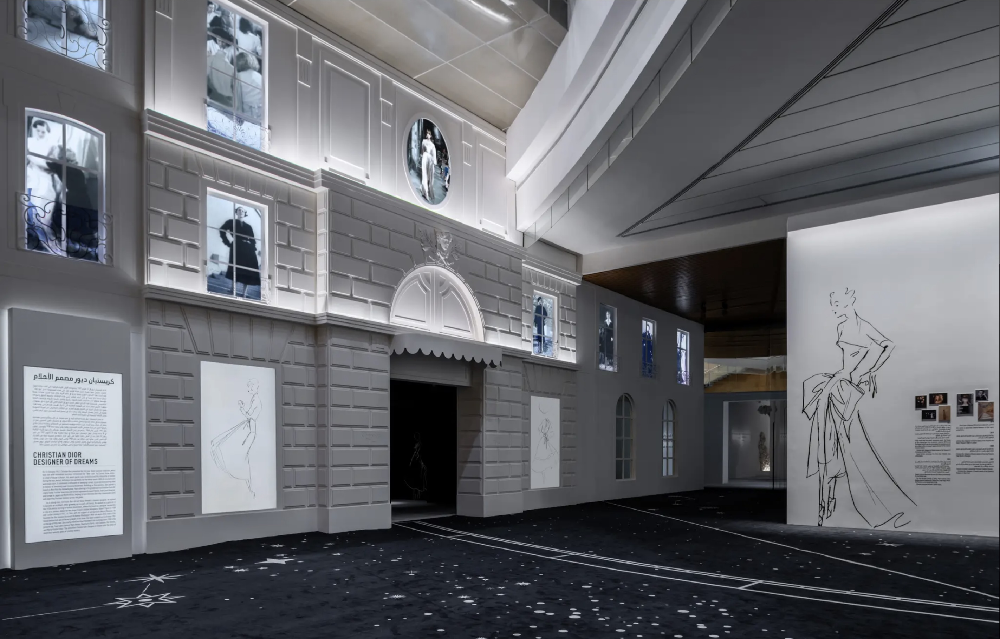
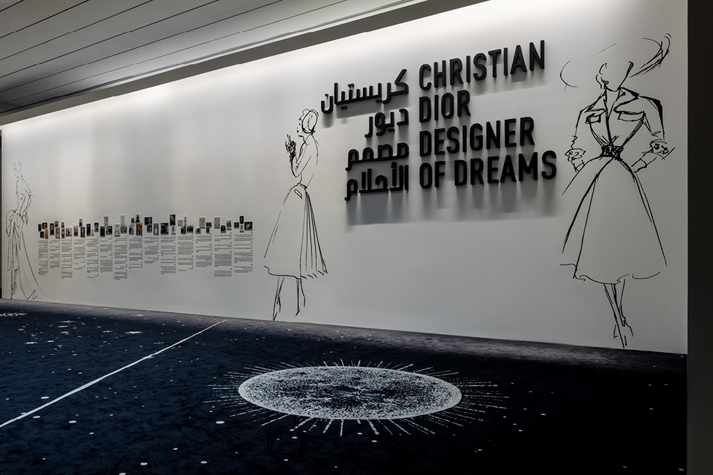

Exhibition Christian Dior - Riyadh
Textile design · Graphic design · Exhibition
Developed an illustration that was produced as an approximately 100-meter-long carpet installed within the exhibition.
The design draws from Dior’s recurring celestial motifs, featuring a central sun composition surrounded by planets and stars.
A ribbon element was used as a visual device to guide visitors’ movement through the space.

